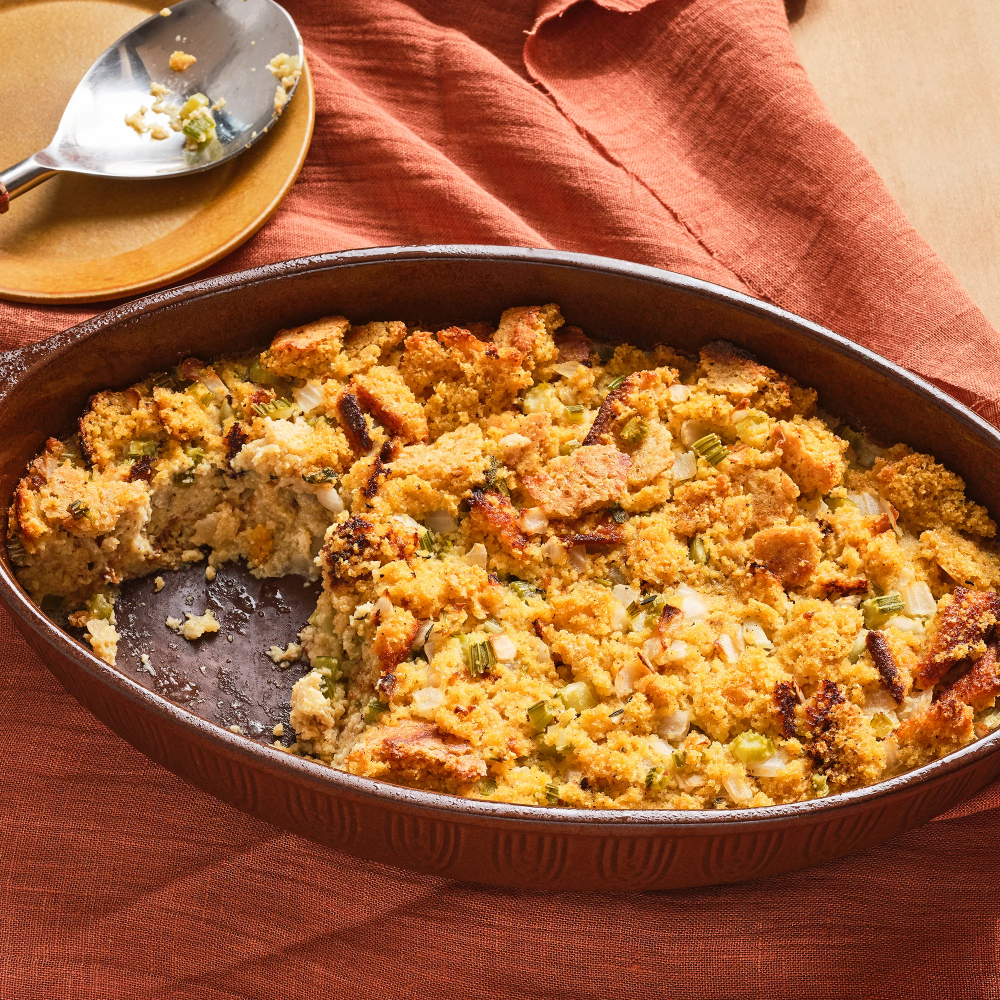

Cornbread Dressing

Description
This cornbread dressing recipe is from my grandmother.
She loved to make it for holiday dinners and for family
gatherings at other times of the year. Use your favorite
cornbread mix to make a batch of cornbread, and then crumble
it for use in this family-favorite recipe. I hope you enjoy
it as much as I have!
Ingredients
- Cornbread: This recipe starts with crumbled cornbread.
- Vegetables: You'll need diced onions and celery.
- Butter: Butter is used to saute the fresh vegetables.
- Eggs: Two eggs add moisture and richness. They also act as a binding agent, which means they help hold the dressing together.
- Stock: Use store-bought
- Seasonings: This cornbread dressing is seasoned with dried sage, salt, and black pepper. Of course, you can adjust the seasonings to taste.
Steps
- saute the vegetables in butter until soft.
- Add the sauteed vegetables to the crumbled cornbread.
- Stir in the remaining ingredients and mix until well-combined.
- Transfer the dressing to a prepared baking dish and bake until golden brown.